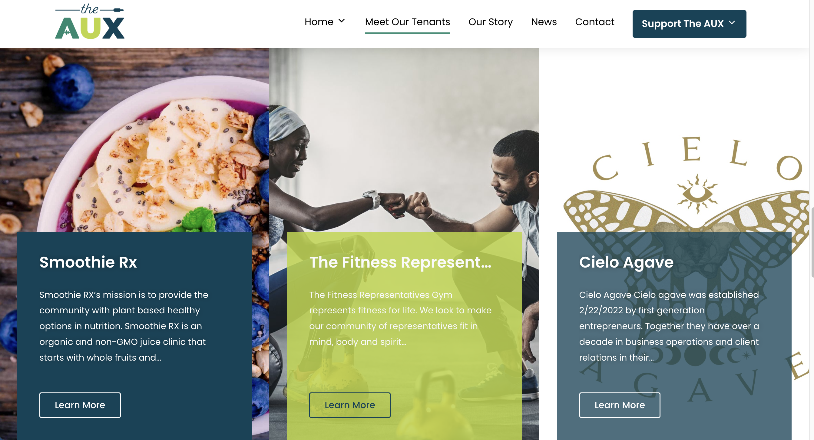

The AUX
- Deliverable:
- web application and presentation
- Role:
- product designer and front-end developer
- Methods:
- user interviews. paper prototyping. usability testing. sketch. continuous integration.
- Artifacts:
- website, presentation
- Technologies:
- WordPress, Elementor, Custom HTML & CSS, Figma, Google Docs
The Challenge
The primary challenge I encountered was to rejuvenate the Tenant Page without simply duplicating its existing content. My objective was to spotlight the unique talents and skills of each tenant at The Aux, ensuring that their individuality and contributions were highlighted effectively.
Planning & Discovery
During the planning and analysis phase, my primary focus was to identify the target audience for the website, understand their specific wants and needs, and determine the essential features to incorporate into the platform.
Through thorough research, strategic planning, and extensive consultations with our client, I meticulously compiled a comprehensive list of features and enhancements to ensure the website's success. Some of the key elements included in our planning process were:
- Clarified their message (who they are and what they do)
- Conveyed a feeling of power, excellence, and excitement
- Showcased the AUX “Tenants”
Methods
I analyzed the existing AUX website and similar ones -
like The Phoenix (Milwaukee) -
to determine what was working and what wasn't.
Also looked at their existing marketing materials
(e.g. news articles, videos, social media, etc.)
Interviewed the client - got the client's input regarding what
they were looking for, the look and feel,
timeline, communication style, etc.
Methods
- Created an interview guide
- Organized and conducted needs assessment and feedback meetings, asked follow-up / clarifying questions,
- Note-taking
- Debriefed / compiled the findings from the interview with the team.
Defining Requirements
From my internet research / client interview, I created a list of requirements (which were high-level tasks that the software should support). Which included: I learned who was in charge (lol) Looked at websites; transferred their info to the new website. Looked at what I liked / didn't like. Created tasks and a design for each. Didn't try and do everything I wanted to do - put the client's requirements first: Tenant Profiles Got their 'buy-in' for modifications to their existing website.
Design
Methods
In the initial stages of my design process, I utilized low-fidelity prototyping using Google Slides as a collaborative tool. Through Google Slides, we generated a multitude of ideas regarding the website's layout, content, and visual aesthetics. By sharing and discussing these designs as a team, we were able to iterate rapidly and refine our concepts, fostering a dynamic environment conducive to creativity and innovation. As we progressed to the high-fidelity prototyping phase, utilizing Figma and WordPress. Through collaborative discussions and feedback sessions, we collectively made design decisions that aligned with our vision and objectives, ensuring coherence and consistency across the website's interface and user experience. The transition from low-fidelity to high-fidelity prototyping marked a significant evolution in our design process, enabling us to transform abstract ideas into tangible representations of our vision. By embracing a collaborative and iterative approach, we were able to leverage the strengths of each team member and harness the collective creativity of the group, resulting in a robust and user-centric design that exceeded expectations.
Skills / Tools
Google Slides Figma Simplified the text / messaging Worked with online stock image providers (Pexel, Unsplash, etc.). Slack Worked with WordPress templates and widgets (Elementor, Royal Elementor, ElementsKit, etc.) Trello – project management tool. Helps keep projects organized. And you know who’s doing what (we tried to use this, but ended up mostly using email...which is fine, given the scope of our projects)? Designedand/or worked with a style guide / branding kit.
How did we stay organized?
Email reminders Each week making sure everyone had a task SCRUM Weekly meetings / ceremonies(?)
Development
After we came up with the designs / templates / widgets, we created the actual pages and posts, using the content provided, and created a unified look and feel.
Methods
Designed the information architecture of the website (what is most important, less important). Designed the communication and flow of the website. Implemented the Wordpress site on a live server.
Description of the Process
Figuredout the skeleton and the order What pictures to use Shortened the content (b/c ppl usually skim websites versus reading all of the content) Prepared to meet and get feedback.
Evaluation
After we created our V1 prototype, we sent our link to the client for feedback.
Methods
After presenting the prototype, we carefully compiled the feedback provided by the client. This feedback encompassed a range of perspectives, including usability, functionality, and overall design aesthetics.
We created three different versions of the website throughout our design process.
Version 1
Following the initial feedback from our client, we received positive affirmation regarding the website's structure and overall design concept. However, the client expressed a desire for more color and vibrancy to enhance the visual appeal and engagement of the site. Design: more color; made sure to follow the style guide.
Version 2
Timeline: In response to critical feedback, we undertook a comprehensive redesign process aimed at enhancing the usability and effectiveness of the website. Here are the key changes we implemented:News Page Restructuring, Fundraising Thermometer, Content and Imagery Updates
Version 3
“Customer may not know what they want, but they definitely know what they don’t like” - highlights the importance of gathering feedback and iterating on designs based on customer preferences and dislikes. By presenting customers with different options and actively incorporating their feedback into the design process, you demonstrate a commitment to understanding their needs and delivering solutions that resonate with them..
Deployment & Handoff
To deploy the website, we facilitated the client's registration with a reputable hosting provider, GoDaddy, ensuring a seamless transition to the live server environment. Leveraging the capabilities of WordPress, we facilitated the export and import process to transfer the website content and configurations to the new hosting platform, minimizing downtime and ensuring continuity of service. s part of our commitment to website security and data integrity, we implemented robust security measures to safeguard the WordPress site against potential threats and vulnerabilities.
This included configuring firewalls, enabling SSL encryption, and implementing best practices for user authentication and access control. In addition, we established a comprehensive backup strategy to protect against data loss and ensure business continuity in the event of unforeseen incidents. Regular backups of the WordPress site and database were scheduled and stored securely, providing peace of mind and mitigating the risk of data loss.
To optimize performance and reliability, we offloaded images to a cloud hosting provider, ensuring fast loading times and minimizing server resource consumption. By leveraging cloud-based storage solutions, we enhanced scalability and flexibility while reducing infrastructure costs.
Furthermore, we created training videos and documentation to empower the client with the knowledge and skills needed to manage and maintain the website independently. These resources covered topics such as content management, software updates, and basic troubleshooting, enabling the client to take ownership of their digital presence with confidence.
As part of the website handoff process, we developed a tailored maintenance plan outlining ongoing responsibilities and recommended best practices for long-term success. By providing comprehensive support and guidance, we ensured that the client was equipped to manage and optimize their WordPress site effectively, fostering a collaborative and sustainable partnership for the future.
Reflection
Working on this website provided me with invaluable insights into the principles of UX design, namely Empathize, Define, Ideate, and Create. These principles guided my approach to redesigning the Tenants page, elevating it beyond a simple showcase of businesses to a dynamic and engaging platform.
Initially, the Tenants page featured photos and brief summaries of each business. However, my goal was to transform the page into a vibrant space that truly showcased the unique personality and offerings of each tenant. Through collaborative meetings with the client, I gained a deeper understanding of The Aux's mission and vision, allowing me to empathize with their goals and objectives.
As the designer of the Tenants page, I took on the responsibility of defining the individual personality and essence of each tenant. This involved delving into their backgrounds, values, and offerings to create a tailored representation that resonated with their target audience.
Leveraging tools such as Figma and WordPress, I embarked on the creative process of bringing each tenant to life on the page. Through strategic design choices, including layout, color scheme, and imagery, I successfully highlighted the unique personality and skills of each tenant, ensuring that they stood out and captured the attention of visitors.
By applying UX design principles and harnessing the capabilities of digital design tools, I was able to transform the Tenants page into a visually compelling and informative space that not only showcased the diversity of businesses at The Aux but also fostered a sense of connection and community among visitors. This project not only expanded my skills as a designer but also reinforced the importance of empathy, creativity, and collaboration in creating impactful user experiences.